At three Lincolnshire wind farms, adding archived UKV forecasts to ECMWF's ensemble mean lowered the wind power error at lead days 1 and 2, and the solar gain of about 0.1 points met the planned rule at day 3 only
At three wind farms in Lincolnshire, the power-forecast error at lead days 1 and 2 was lower for an XGBoost model (a gradient-boosted tree model) given the Met Office's UK variable-resolution (UKV) weather forecast from the archive of the Centre for Environmental Data Analysis (CEDA) as well as the mean of the European Centre for Medium-Range Weather Forecasts (ECMWF) ensemble forecast (ENS) than for an XGBoost model given the ENS mean alone. The result holds at both hyperparameter settings, against both shuffled controls, after the Bonferroni correction, and with any one calendar month dropped. The gain is 0.24 to 0.27 points of capacity at day 1 and 0.19 to 0.21 points at day 2, across the two settings. At wind day 3 the gain rests heavily on February 2026. At six solar farms the gain is about 0.1 points of capacity at days 1 to 3, and the planned rule is met at day 3 only. At day 4 the study is inconclusive for both technologies. UKV's run starts 3 hours after ENS's run. Two post hoc tests that move UKV's run earlier cannot say how much of any gain comes from UKV's weather and how much from the later start. This page calls the UKV data from the CEDA archive UKV-CEDA.
The error is a mean absolute error in percentage points of the generator's capacity, and every
difference is the first XGBoost model's error minus the second XGBoost model's error. A negative
difference means the XGBoost model given UKV-CEDA forecasts better. Each bracketed pair is a 95%
interval from resampling whole calendar months and a fitting seed (the random-number seed of
XGBoost's training). Every number comes from one of the study's five reports: report.md, and the
post hoc report_2.md, report_3.md, report_4.md, and report_5.md. The page names the report
wherever the number is not in report.md or report_2.md. The two hyperparameter settings, the
XGBoost training options fixed before any fit, are the primary setting and a sensitivity setting
(the primary setting first, then the sensitivity setting in brackets or in a second row). Data and
methods defines the shuffled controls, the planned rule, and the Bonferroni
correction.
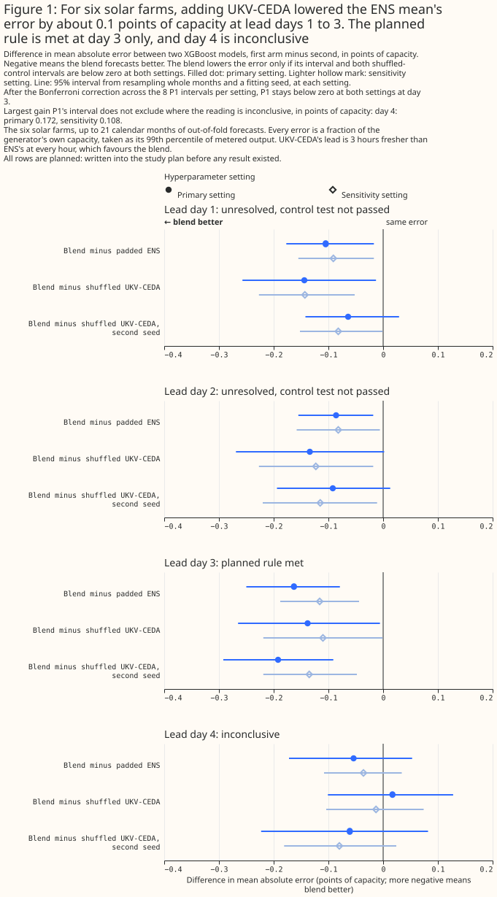
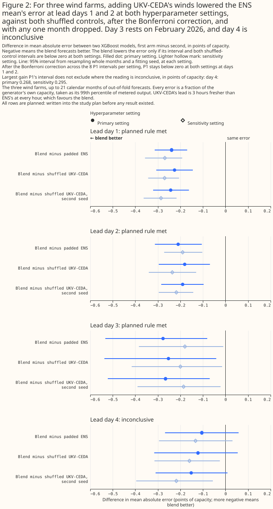
How this page was made. The research question came from a human. Everything else — the code behind every result, the analysis, the figures, and the text — was written by Claude, Anthropic's AI model (for this page, Claude Sonnet 5.5, Claude Opus 5.5, and Claude Sonnet 5, with Claude Opus 5.5 and Claude Sonnet 5 also reusing shared code that earlier Claude sessions wrote). Several independent Claude reviewers have checked the method, the evidence, and the prose adversarially.
Key findings
For a day-ahead wind forecast, adding UKV-CEDA's winds to the ENS mean lowers the error at lead days 1 and 2 by about 0.2 to 0.3 points of capacity at the three wind farms. A UKV-CEDA run that is 12 hours older than the run tested keeps about half the day-1 gain.
For solar, adding UKV-CEDA lowers the error by about 0.1 points at days 1 to 3 at the six solar farms, and the planned rule is met at day 3 only. A post hoc permutation test ranks the gain first of 18 at days 1 to 3, and licenses no claim of statistical significance at the 5% level.
At wind day 3 the gain rests on February 2026, and at day 4 the study cannot say whether UKV-CEDA helps.
- At wind days 1 and 2, adding UKV-CEDA's winds lowers the error at both settings, against both controls, after the Bonferroni correction, and with any one month dropped (wind results). The differences are -0.239 [-0.314, -0.170] (-0.269 at sensitivity) at day 1 and -0.210 [-0.313, -0.105] (-0.190) at day 2, from errors of 8.236% and 9.470% for the ENS mean alone. The planned rule is met, and both results survive the Bonferroni correction at both settings.
- At wind day 3, the gain rests on February 2026 (wind day 3). The difference is -0.277 [-0.533, -0.081], and the planned rule is met. Without February 2026 and at the sensitivity setting, the interval reaches +0.022, and the correction fails at that setting even with every month.
- At solar days 1 to 3, adding UKV-CEDA lowers the error by about 0.1 points, as one pattern (solar results). The differences run from -0.082 to -0.163 across days and settings. The planned rule is met at day 3 only. A post hoc permutation test, added after the two planned controls had been seen, ranks the planned blend's gain first of 18 at days 1 to 3 (p = 0.056, the smallest p-value that 17 shuffled controls allow), and the planned readings at days 1 and 2 stay "unresolved".
- At day 4, the study is inconclusive (day 4). The intervals do not exclude a gain of 0.172 points for solar or 0.295 points for wind, as large as the gains at days 1 to 3.
- Older UKV-CEDA runs keep part of the gain, and the study cannot say whether lead or run timing
causes the loss (older runs). The post hoc
stale blend, which reads a UKV-CEDA run one day older, keeps 65% and 49% of the planned wind gain
at days 2 and 3, and 30% at day 1. The post hoc older-run blend, which reads a UKV-CEDA run 12
hours older, keeps 40% to 70% of the planned gain at the primary setting (
report_5.md).
Introduction
The question is whether the Met Office's UKV, read at lead days 1 to 4, lowers the power-forecast error of ECMWF's ensemble mean. UKV is the Met Office's 2 km weather model for the United Kingdom. The blends page tests UKV at day 1 only, from Open-Meteo's archive of live UKV. CEDA's archive holds whole UKV runs out to 120 hours, so this page tests days 2 to 4 as well. The page covers solar and wind power separately, at the 6 solar farms and 3 wind farms used by the matched-lead page. The weather products survey describes both products.
The ENS mean and UKV-CEDA read different runs, and UKV-CEDA's run starts later. For a valid hour on day D at lead day N, ENS reads the 00 UTC run of day D−N (UTC is Coordinated Universal Time), at a lead of 24N plus the hour of the day. UKV-CEDA reads the 03 UTC run of the same day, which a service running at 09:00 UTC could read. UKV-CEDA's lead is therefore 3 hours shorter at every hour.
| Product | Grid | Coverage | History | Assumed availability |
|---|---|---|---|---|
| ECMWF ENS mean (51 members) | About 9 km native, served on 0.25° cells; the study averages the cells overlapping each generator's H3 hexagon (a cell of the H3 hexagonal grid) | Global | From 2024-04-01 | Not measured; the 00 UTC run is assumed readable at 09:00 UTC |
| UKV-CEDA | 2 km; the study reads the cell nearest each generator | United Kingdom | CEDA's archive holds runs from 2016-03-16, and the study reads December 2024 to September 2026 | Not measured for CEDA; the 03 UTC run is assumed readable at 09:00 UTC |
| Product | Run read for lead day N | Lead of the hour of day h | Resolution in time |
|---|---|---|---|
| ECMWF ENS mean (51 members) | 00 UTC run of day D−N | 24N + h hours | 3-hourly, upsampled |
| UKV-CEDA | 03 UTC run of day D−N | 24N + h − 3 hours | hourly to lead 48 hours, then 3-hourly to 120 |
Day 5 is not tested. At day 5 the lead is 24 × 5 + h − 3 hours, which exceeds UKV-CEDA's 120-hour reach for every hour after 03:00 UTC.
Data and methods
A blend is an XGBoost model given ENS's mean weather and UKV-CEDA's weather, and the page compares the blend with two other XGBoost models. The padded ENS model is given ENS's mean weather and exact copies of the same columns, so that it has the blend's column count (9 for solar, 11 for wind). The shuffled-control model has the blend's columns, but its UKV-CEDA columns are shuffled among hours that share a generator, a year-month, and an hour of day. The shuffle keeps each generator's monthly distribution of UKV-CEDA at each hour of day, so a shuffled control carries no hour-by-hour information from UKV-CEDA. The study fits two shuffled controls, with shuffle seeds 0 and 1000.
Equal column counts matter because an XGBoost model with more columns can win without carrying
more information. A check at wind day 1 and solar day 1 found the padded ENS model's per-row
losses identical to the unpadded ENS model's (padding_check.json, which fit_ukv_ceda_blends.py
--check writes once and report_2.md prints). The padded ENS model carries no extra information,
so the blend minus the padded ENS model measures what UKV-CEDA adds to the ENS columns given, and
not what it adds beyond every field ENS publishes.
The solar models are given ENS's mean global irradiance and temperature, and UKV-CEDA's global irradiance and temperature. The wind models are given ENS's 100 m wind speed, the sine and cosine of its 100 m direction, and its 10 m wind speed. UKV-CEDA's wind columns are its native 10 m wind speed, the sine and cosine of its 10 m direction, and its wind speed at the 925 hPa pressure level, roughly 750 m above sea level. None of UKV-CEDA's wind columns is a 100 m wind. Every XGBoost model also has the hour of day, the day of the year, and an era code (the three eras are set out in the next paragraph), and the solar models have the sun's elevation and azimuth. Each model named above is fitted separately at each generator, as one XGBoost model per generator.
The rows, folds, and intervals follow the matched-lead page. The study scores 21 months of valid hours, from December 2024 to September 2026, with January 2026 dropped because the Met Office upgraded UKV on 21 January 2026. The eras are: era 0 before October 2025 (10 months), era 1 from October to December 2025 (3 months, too few for an interval), and era 2 from February 2026 (8 months). Folds are blocks of whole months within each era, and every forecast is made out of fold, by an XGBoost model not trained on that forecast's fold. Each row, one generator at one valid hour, is scored only if ENS and UKV-CEDA both have values for the row, so every XGBoost model of a lead day is trained and scored on the same rows: 38,253 to 38,287 solar rows and 41,526 to 41,541 wind rows per lead day. Each row's error is divided by its own generator's capacity before any mean or difference. The intervals resample whole calendar months and one of three fitting seeds, paired across XGBoost models. The intervals cover month-to-month weather and fitting-seed variation, and not differences between generators.
Two contrasts are planned. A planned contrast was written into the study plan before any result existed. P1 is the blend minus the padded ENS model. P2 is the blend minus each shuffled control, with one contrast per shuffle seed. The reading rule is: the blend "lowers the error" at a technology and lead day only if the upper 95% bound of P1 and of both P2 contrasts is below zero at both settings. The study reports P1's Bonferroni-adjusted 99.375% interval, a wider interval that allows for reading the 8 P1 intervals per setting at once. The study does not adjust P2. Where P1 is below zero at both settings and a P2 bound is not, the reading is "unresolved: lower than padded ENS, control test not passed".
Every other number is exploratory, and the page does not correct the exploratory rows for multiple comparisons. The page labels the analyses made after the first scientific-validity review as post hoc. Each exploratory row has a nominal 5% chance of reaching statistical significance at the 5% level with no real effect behind it. The number of spurious rows is unknown, and the rows' shared months make spurious results cluster. Where the reports flag a contrast as near the 5% line, the page says so.
Every fit is on one graphics processing unit (GPU). The page reports a refit of one XGBoost model on a central processing unit (CPU) as a noise floor (Limitations).
Results
The XGBoost models make sane forecasts
Out of fold, the wind and solar models follow the measured output across the weeks chosen by rule. Figures 3 and 4 plot the day-1 blend's out-of-fold forecast against measured output, with each generator's output as a percentage of its own capacity, over one week per era chosen from measured output alone. A week is left out for an era in which no week has every generator covered on all 7 days. Solar has no fully covered week in era 1 (October to December 2025), so Figures 3a and 3b show the weeks of February 2025 and March 2026. Figures 4a, 4b, and 4c show the wind weeks of September 2025, December 2025, and February 2026.
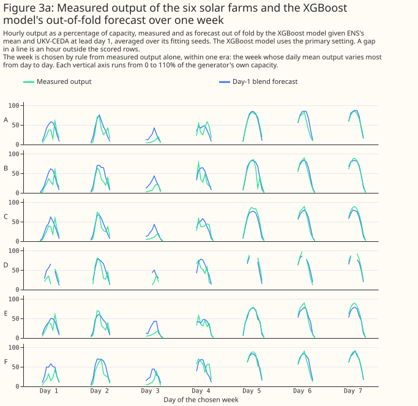
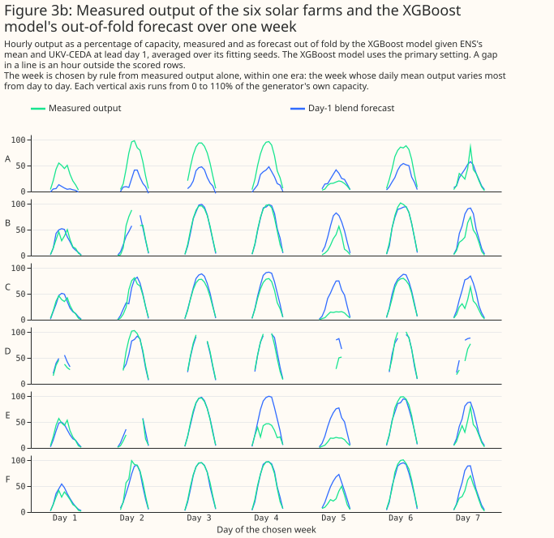
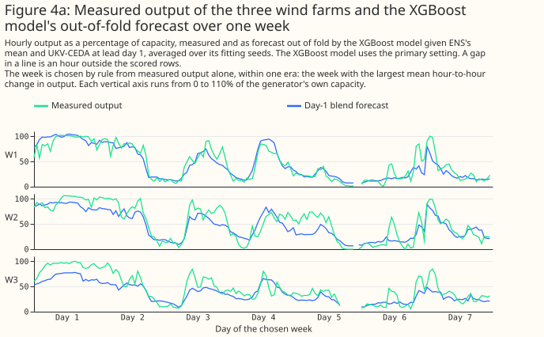
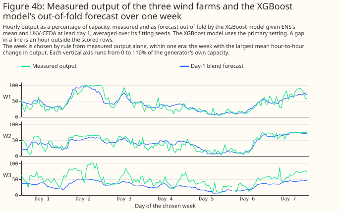
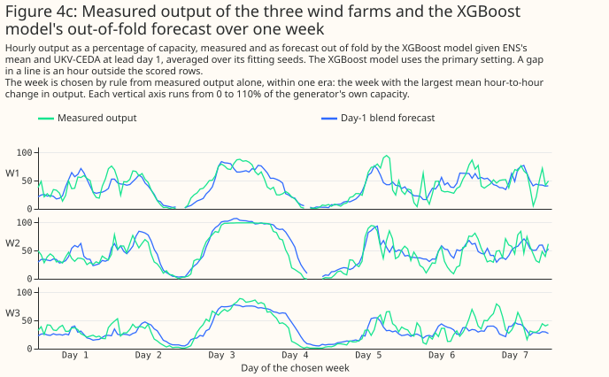
The mean absolute error of every XGBoost model rises with the lead day, and the padded ENS model's
error is the reference level. For solar, the padded ENS model's error is 8.820% of capacity at day
1 and 11.692% at day 4. For wind, the padded ENS model's error is 8.236% at day 1 and 12.328% at
day 4. The tables give every XGBoost model's own error, at both settings, from report_2.md. The
errors carry no intervals, because every XGBoost model's error rises and falls together from month
to month, and pairing cancels that shared swing. Figures 5 and 6 draw the primary-setting errors,
and Figures 7 and 8 draw the errors at each generator.
| Solar lead day | Setting | Padded ENS | ENS + UKV-CEDA | ENS + shuffled, seed 0 | ENS + shuffled, seed 1000 |
|---|---|---|---|---|---|
| 1 | primary | 8.820 | 8.715 | 8.858 | 8.779 |
| 1 | sensitivity | 8.774 | 8.684 | 8.827 | 8.765 |
| 2 | primary | 9.849 | 9.762 | 9.896 | 9.855 |
| 2 | sensitivity | 9.782 | 9.700 | 9.823 | 9.815 |
| 3 | primary | 10.769 | 10.606 | 10.744 | 10.798 |
| 3 | sensitivity | 10.703 | 10.587 | 10.697 | 10.722 |
| 4 | primary | 11.692 | 11.638 | 11.621 | 11.699 |
| 4 | sensitivity | 11.526 | 11.490 | 11.503 | 11.570 |
| Wind lead day | Setting | Padded ENS | ENS + UKV-CEDA | ENS + shuffled, seed 0 | ENS + shuffled, seed 1000 |
|---|---|---|---|---|---|
| 1 | primary | 8.236 | 7.996 | 8.222 | 8.239 |
| 1 | sensitivity | 8.169 | 7.900 | 8.170 | 8.186 |
| 2 | primary | 9.470 | 9.260 | 9.441 | 9.450 |
| 2 | sensitivity | 9.344 | 9.154 | 9.389 | 9.372 |
| 3 | primary | 11.020 | 10.743 | 10.996 | 11.009 |
| 3 | sensitivity | 10.846 | 10.666 | 10.866 | 10.851 |
| 4 | primary | 12.328 | 12.222 | 12.345 | 12.374 |
| 4 | sensitivity | 12.168 | 12.034 | 12.194 | 12.252 |
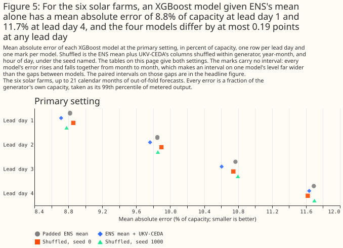
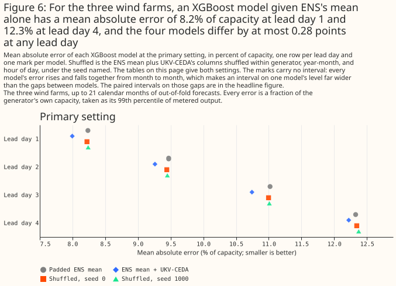
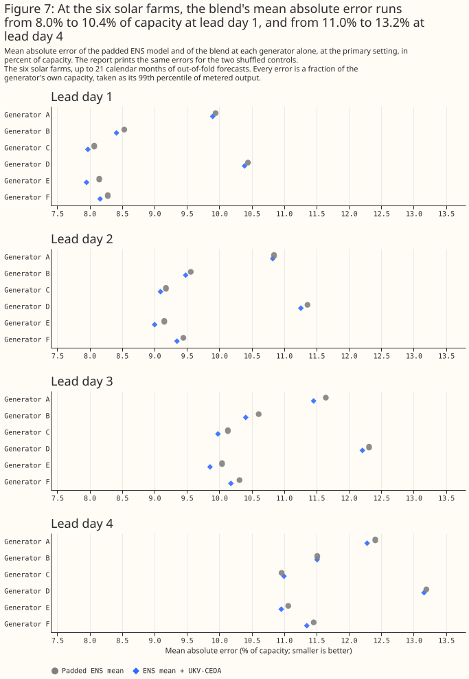
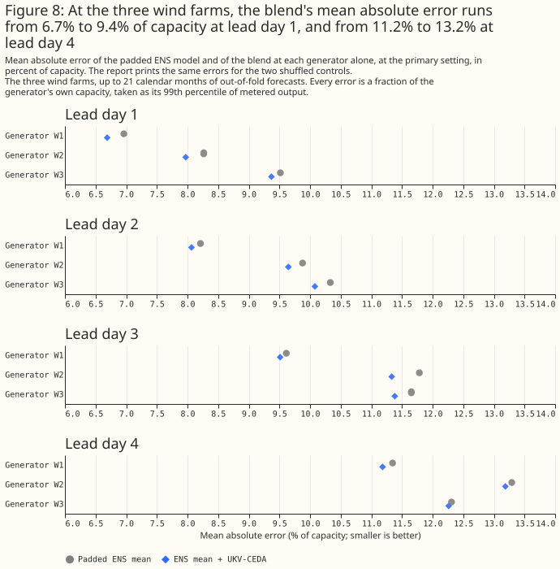
Wind days 1 and 2 meet the planned rule and survive four robustness checks
At wind days 1 and 2, the planned rule is met, and the gain survives both settings, both controls, the Bonferroni correction, and the loss of any one month. At day 1, P1 is -0.239 [-0.314, -0.170] at the primary setting and -0.269 [-0.357, -0.192] at the sensitivity setting. P2 against the seed-0 control is -0.226 [-0.307, -0.145] (-0.270) and against the seed-1000 control -0.243 [-0.321, -0.162] (-0.286). At day 2, P1 is -0.210 [-0.313, -0.105] (-0.190 [-0.272, -0.103]), P2 is -0.181 [-0.296, -0.069] (-0.236) against seed 0 and -0.190 [-0.285, -0.097] (-0.218) against seed 1000.
The Bonferroni intervals stay below zero at both settings. At day 1 the Bonferroni intervals are [-0.342, -0.144] and [-0.379, -0.173], and at day 2 [-0.338, -0.071] and [-0.298, -0.061].
Dropping any one month leaves the wind upper bounds at days 1 and 2 below zero. In the exploratory, post hoc leave-one-month-out check (nothing refitted), the highest upper bound over the 21 single-month drops is -0.151 at day 1 (dropping January 2025) and -0.083 at day 2. The sensitivity setting gives -0.178 and -0.088.
The gain is similar in era 0 and era 2, and clear at two of the three generators. In the exploratory era rows, day 1 gives -0.260 [-0.367, -0.131] in era 0 and -0.228 [-0.348, -0.149] in era 2, and day 2 gives -0.215 [-0.386, -0.025] and -0.185 [-0.293, -0.057]. Era 1 has 3 months and no interval, with -0.198 at day 1 and -0.249 at day 2. By generator, the day-1 differences are -0.273 [-0.394, -0.178] at W1, -0.294 [-0.408, -0.191] at W2, and -0.146 [-0.329, +0.035] at W3. The day-2 differences are -0.147 [-0.257, -0.037], -0.231 [-0.361, -0.105], and -0.251 [-0.488, -0.049]. Figure 9 draws the generators.
The shuffled controls differ from each other by no more than 0.058 points at any wind lead day. The largest gap is at day 4 and the sensitivity setting (-0.058 [-0.201, +0.056]). No wind gap is statistically significant at the 5% level. At wind days 1 and 2 the gap between the controls is therefore far smaller than P1.
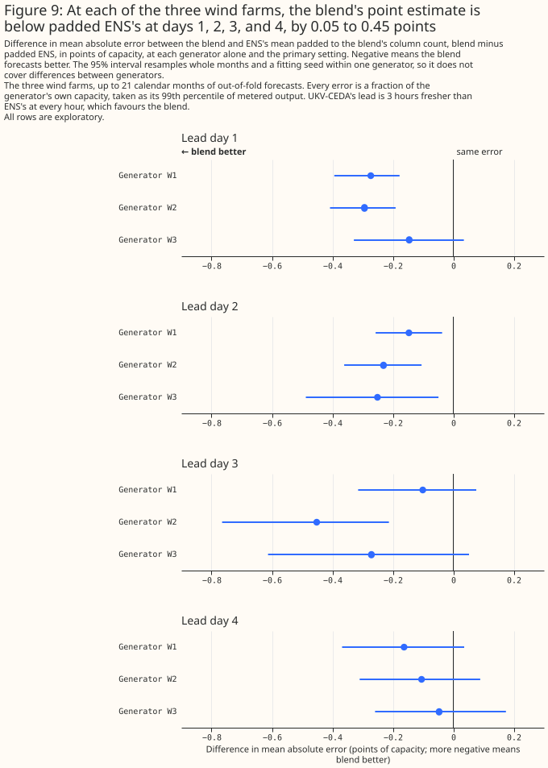
Wind day 3 rests on February 2026
At wind day 3 the planned rule is met, and the gain depends on one month. P1 is -0.277 [-0.533,
-0.081] at the primary setting and -0.180 [-0.384, -0.010] at the sensitivity setting, and both P2
contrasts are below zero at both settings. The Bonferroni interval at the primary setting is
[-0.625, -0.025], but at the sensitivity setting it is [-0.463, +0.035], so the gain does not
survive the correction at both settings. Dropping February 2026 gives -0.186 [-0.348, -0.046] at the
primary setting and -0.111 [-0.242, +0.022] at the sensitivity setting, so the sensitivity interval
reaches zero. February 2026 is the first month of era 2. In the exploratory era rows, era 2 gives
-0.437 [-0.989, -0.085] and era 0 gives -0.227 [-0.518, -0.002]. P1 and both P2 contrasts at wind
day 3 are near the 5% line at both settings (report_5.md).
By generator, wind day 3 is clear at W2 only. The differences are -0.101 [-0.315, +0.076] at W1, -0.452 [-0.765, -0.213] at W2, and -0.271 [-0.613, +0.052] at W3. The page therefore reports wind day 3 as met by the planned rule and as dependent on one month, and does not place wind day 3 beside days 1 and 2.
Solar: about 0.1 points of capacity at days 1 to 3
For solar, adding UKV-CEDA lowers the error by about 0.1 points of capacity at days 1 to 3, and the study cannot say that day 3 differs from days 1 and 2. P1 is -0.105 [-0.177, -0.017] (-0.091 [-0.155, -0.017]) at day 1, -0.086 [-0.155, -0.018] (-0.082 [-0.158, -0.006]) at day 2, and -0.163 [-0.250, -0.079] (-0.116 [-0.188, -0.044]) at day 3, so P1 is statistically significant at the 5% level at both settings on each day. The planned rule is met at day 3 only. Two of day 3's P2 upper bounds, -0.006 and -0.001, lie within 0.01 points of zero.
At solar days 1 and 2 the reading is "unresolved: lower than padded ENS, control test not passed". The blend's error is lower than the padded ENS model's by 0.08 to 0.11 points at both settings. At day 1 the rule fails because the seed-1000 control's interval reaches zero at the primary setting: P2 is -0.064 [-0.142, +0.029]. At day 2 the rule fails because both controls' intervals reach zero at the primary setting, with upper bounds of +0.002 (seed 0, P2 -0.134 [-0.269, +0.002]) and +0.013 (seed 1000, P2 -0.092 [-0.194, +0.013]). After the Bonferroni correction the P1 interval reaches zero at the primary setting at both days ([-0.200, +0.020] at day 1 and [-0.187, +0.001] at day 2), and at the sensitivity setting too ([-0.175, +0.006] and [-0.187, +0.020]). Solar day 3 survives the correction at both settings ([-0.284, -0.052] and [-0.215, -0.016]).
Several solar contrasts are near the 5% line. The reports flag these contrasts (report_5.md):
at day 1, P1 at both settings, the seed-0 P2 at the primary setting, and the seed-1000 P2 at both
settings; at day 2, P1 and both P2 contrasts at both settings; at day 3, the seed-0 P2 at both
settings; and at day 4, the seed-1000 P2 at the sensitivity setting.
Two shuffled controls that carry no hour-by-hour information differ from each other by about as much as the solar gain, and two draws are too few to say how far a shuffled control's error moves by chance. At day 1 the seed-0 control minus the seed-1000 control is +0.079 [+0.025, +0.133] at the primary setting and +0.062 [+0.018, +0.103] at the sensitivity setting, and at day 4 the sensitivity gap is -0.067 [-0.131, -0.006]. The intervals resample months and fitting seeds, not shuffle seeds, so the intervals understate how far a solar XGBoost model's error moves for reasons unrelated to its inputs. The wind gaps are at most 0.058 points. The page therefore describes solar as one pattern, not as four separate verdicts. The next subsection adds 15 further shuffled controls.
Solar is also fragile to the loss of one month. In the post hoc leave-one-month-out check, the highest upper bound over the drops is -0.001 at day 1 (dropping May 2026, primary setting), -0.004 at day 2 (June 2026), and +0.008 at day 2 at the sensitivity setting. At day 3 the highest upper bound is -0.063 at the primary setting (May 2026) and -0.033 at the sensitivity setting.
By generator, every solar generator's point estimate is below zero at days 1 to 3. At day 1 the differences run from -0.045 [-0.197, +0.084] at A to -0.196 [-0.356, -0.030] at E. Figure 10 draws every solar generator's difference. By era, solar day 3 gives -0.154 [-0.254, -0.059] in era 0 and -0.159 [-0.312, +0.009] in era 2, and days 1 and 2 give similar point estimates with intervals that include zero.
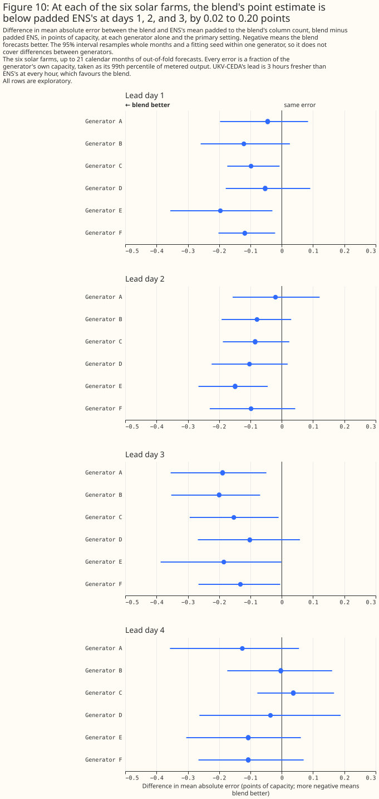
At solar days 1 to 3, the gain beats all 17 shuffled controls in a post hoc permutation test
At solar days 1 to 3, the planned blend's gain over padded ENS is larger than the gain of every
one of 17 shuffled controls. The test was added after the two planned controls had been seen, so
the test is exploratory. The test fits 15 further shuffled controls per solar lead day at the
primary setting, with shuffle seeds 2010 to 2150 in steps of 10, and places the planned blend's P1
among the 17 values of (shuffled control minus padded ENS) that the planned two controls and the 15
further controls give. The numbers are in report_3.md and again in report_5.md. At days 1 to 3,
P1 (-0.105, -0.086, and -0.163) is lower than every control: the lowest control is -0.041, -0.025,
and -0.067. P1 ranks 1 of 18, and the one-sided permutation p-value is 0.056, the smallest that 17
controls allow. At day 4, P1 (-0.054) ranks 6 of 18 (p = 0.333).
One shuffled control can move far by chance. At day 4 the lowest of the 17 controls is -0.141, larger in size than the planned blend's P1 at days 1 and 2.
The test licenses a ranking and no more. The permutation test licenses no claim of statistical significance at the 5% level, because the smallest p-value it can give is 0.056. The test changes none of the planned readings, which stay "unresolved" at days 1 and 2. The test gives no combined p-value across days 1 to 3, because the days share months and shuffle seeds. The test makes no claim about other months, because the test does not resample months. The test therefore answers a different question from the month-resampled intervals.
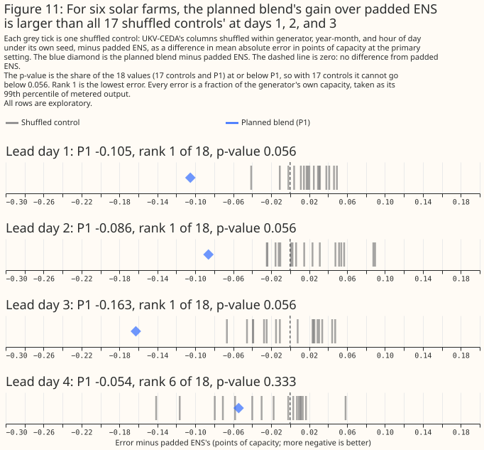
Day 4 is inconclusive
At day 4 the intervals do not exclude gains as large as the gains at days 1 to 3, so the study
cannot say whether the gain fades. For solar, P1 is -0.054 [-0.172, +0.053] (-0.036 [-0.108,
+0.034]), and a gain of 0.172 points is not excluded at the primary setting and 0.108 at the
sensitivity setting. For wind, P1 is -0.105 [-0.268, +0.058] (-0.133 [-0.295, +0.031]), and a gain
of 0.268 points is not excluded at the primary setting and 0.295 at the sensitivity setting. A gain
larger than those bounds is excluded. The wind day-4 P2 contrasts are below zero at the sensitivity
setting for both seeds (-0.160 [-0.315, -0.025] and -0.218 [-0.396, -0.056]). Wind day 4 is near the
5% line for P1 and both P2 contrasts at both settings (report_5.md).
How the gain changes when UKV-CEDA's run is older
Two post hoc blends move UKV-CEDA's run earlier, and each changes the run's lead and its start
time together. The stale blend (report_2.md) is ENS day N plus UKV-CEDA day N + 1, for N of 1 to
3, which is the 03 UTC run one day earlier. That run is 21 hours older than ENS's run, where the
planned blend's run is 3 hours newer, so the start moves by 24 hours and the lead grows by 24 hours.
The older-run blend (report_4.md) reads UKV-CEDA's 15 UTC run of the day before ENS's run. That
run starts 9 hours before ENS's 00 UTC run and leads 12 hours longer than the planned run. Both
blends were run after a scientific-validity review had seen the planned results, so both are post
hoc and exploratory. Neither can separate the effect of a longer lead from the effect of an earlier
start. The study did not fit a UKV-CEDA run that starts at the same moment as ENS's 00 UTC run. That
run would sit between the planned blend's run (3 hours after) and the older-run blend's run (9 hours
before).
Both blends also change the time resolution of UKV-CEDA's columns, a third confound. The store
holds UKV-CEDA hourly only to lead 48 hours, and every hour after lead 48 hours is rebuilt from
3-hourly steps. The planned run at day 1 is read at a lead of 21 to 44 hours, so every hour is
hourly. The older run at day 1 is read at a lead of 33 to 56 hours, and 25.5% of the solar rows and
33.4% of the wind rows lie beyond lead 48 hours (report_5.md). The stale blend and the older-run
blend therefore have more rebuilt hours than the planned blend at days 1 and 2.
The stale blend loses most of the wind day-1 gain, and keeps about half of the wind gain at days 2
and 3. The stale blend is compared with a padded ENS model trained on the same rows, because the
stale blend loses 0.3% to 0.4% of rows that have no UKV-CEDA day N + 1. The padded ENS model trained
on all rows differs from the padded ENS model trained on the stale rows by at most 0.022 points
(wind day 1, primary setting), so the difference in training rows does not drive the contrasts. The
table gives the stale blend minus its padded ENS model (P1, stale) and the stale blend minus the
planned blend, at the primary setting and the sensitivity setting (report_2.md).
| Technology and lead day | P1, stale (primary) | P1, stale (sensitivity) | Stale minus planned blend (primary) | Stale minus planned blend (sensitivity) |
|---|---|---|---|---|
| solar 1 | -0.018 [-0.071, +0.036] | -0.013 [-0.060, +0.026] | +0.085 [-0.023, +0.184] | +0.077 [-0.010, +0.157] |
| solar 2 | -0.035 [-0.135, +0.070] | -0.027 [-0.098, +0.052] | +0.038 [-0.064, +0.135] | +0.047 [-0.036, +0.130] |
| solar 3 | +0.042 [-0.057, +0.135] | +0.030 [-0.035, +0.092] | +0.215 [+0.095, +0.329] | +0.157 [+0.064, +0.252] |
| wind 1 | -0.072 [-0.167, +0.016] | -0.065 [-0.142, +0.009] | +0.188 [+0.120, +0.249] | +0.224 [+0.166, +0.275] |
| wind 2 | -0.137 [-0.294, -0.015] | -0.073 [-0.168, +0.010] | +0.064 [-0.054, +0.175] | +0.114 [+0.012, +0.208] |
| wind 3 | -0.135 [-0.267, -0.022] | -0.096 [-0.241, +0.012] | +0.137 [-0.015, +0.315] | +0.085 [-0.033, +0.215] |
At wind day 1 and solar day 3 the stale blend is clearly worse than the planned blend, and the
other rows are mostly not separable. At wind day 1 the stale blend loses 0.188 [0.120, 0.249] of
the planned blend's 0.239 points. Most of the day-1 gain therefore needs UKV-CEDA's lead to be 21 to
44 hours rather than 45 to 68 hours. The stale blend cannot say how much of the gain the 3-hour
timing advantage carries. The stale blend's gain at wind day 1 is not statistically significant. A
stale-blend gain of 0.167 points at the primary setting is not excluded. At wind days 2 and 3 the
stale blend keeps 65% and 49% of the planned gain at the primary setting (38% and 53% at the
sensitivity setting, report_5.md), and its gain is below zero at the primary setting (-0.137 and
-0.135). The stale-minus-planned contrast at wind days 2 and 3 is not statistically significant at
the primary setting. At the sensitivity setting the contrast is significant at wind day 2 (+0.114
[+0.012, +0.208]). The post hoc reading at wind days 2 and 3 stays "no detectable difference". For
solar, a stale-blend gain of 0.071, 0.135, and 0.057 points at days 1, 2, and 3 is not excluded at
the primary setting.
At wind day 1, a stale UKV-CEDA run still carries some information that the shuffled copy lacks. The stale blend is lower than its shuffled controls at wind day 1 at both settings and both seeds.
The older-run blend keeps 40% to 70% of the planned gain at the primary setting, and its loss at
wind day 1 is statistically significant at both settings. The older-run blend's P1 is -0.138
[-0.208, -0.061] at wind day 1 against the planned blend's -0.239 on the same rows, and -0.147
[-0.234, -0.077] against -0.210 at wind day 2 (report_4.md). The older-run blend minus the planned
blend at wind day 1 is +0.102 [+0.034, +0.168] at the primary setting and +0.156 [+0.090, +0.219] at
the sensitivity setting. At solar, the older-run P1 interval includes zero at the primary setting at
all three days. The older-run minus planned contrast at solar is statistically significant only at
day 2 at the sensitivity setting (+0.062 [+0.008, +0.114]). The older-run readings in report_4.md
rest on one control seed and no Bonferroni correction, so an older-run reading is weaker than a
planned reading.
| Technology and lead day | Planned P1 (primary) | Older-run P1 (primary) | Older-run minus planned blend (primary) | Older-run minus planned blend (sensitivity) |
|---|---|---|---|---|
| solar 1 | -0.105 [-0.177, -0.017] | -0.042 [-0.102, +0.024] | +0.063 [-0.015, +0.128] | +0.051 [-0.017, +0.109] |
| solar 2 | -0.086 [-0.155, -0.018] | -0.036 [-0.134, +0.068] | +0.050 [-0.018, +0.111] | +0.062 [+0.008, +0.114] |
| solar 3 | -0.163 [-0.250, -0.079] | -0.076 [-0.161, +0.009] | +0.087 [-0.003, +0.183] | +0.030 [-0.045, +0.110] |
| wind 1 | -0.239 [-0.314, -0.170] | -0.138 [-0.208, -0.061] | +0.102 [+0.034, +0.168] | +0.156 [+0.090, +0.219] |
| wind 2 | -0.210 [-0.313, -0.105] | -0.147 [-0.234, -0.077] | +0.063 [-0.040, +0.162] | +0.089 [-0.016, +0.198] |
| wind 3 | -0.277 [-0.533, -0.081] | -0.141 [-0.301, +0.017] | +0.135 [-0.057, +0.358] | +0.085 [-0.058, +0.248] |
At day 1, the wind loss holds on hourly rows, and the solar loss sits in the late hours of the
day. Splitting the day-1 rows at lead 48 hours keeps both runs hourly on the rows at or before the
limit (report_5.md). At wind day 1 the older-run minus planned contrast on those rows (66.6% of
the rows) is +0.115 [+0.048, +0.186] at the primary setting and +0.166 [+0.109, +0.226] at the
sensitivity setting, so the time resolution does not explain the wind loss. At solar day 1 the
contrast is +0.034 [-0.047, +0.108] on the rows at or before the limit (74.5% of the rows), and
+0.148 [+0.041, +0.241] beyond the limit. The rows beyond the limit are the late hours of the day,
so the split cannot separate time resolution from hour of day. The solar loss is not attributable to
either cause.
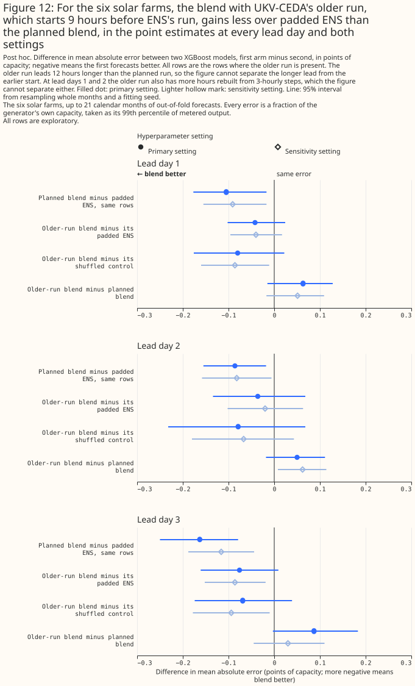
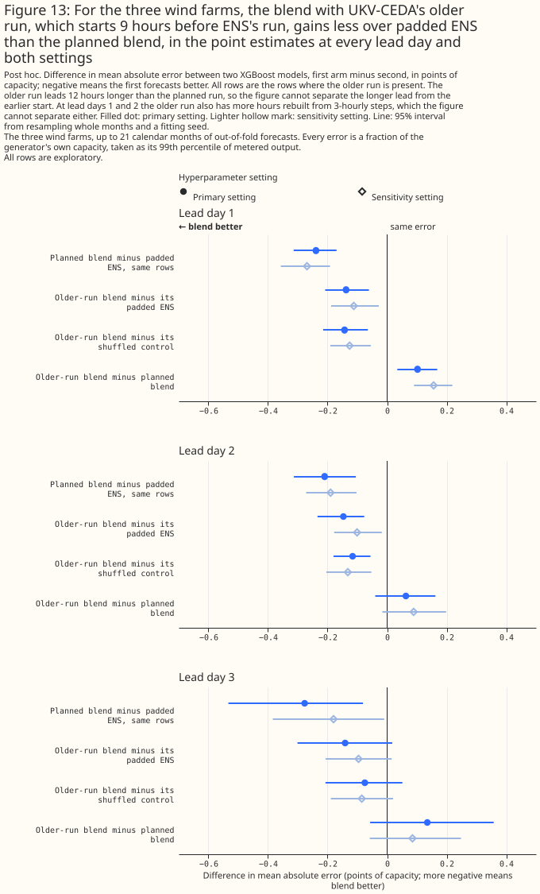
The two blends support one reading: a UKV-CEDA run that starts earlier and leads longer gives less of the gain, and the study cannot say how much of the loss each change causes. The stale blend keeps 65% and 49% of the wind gain at days 2 and 3 at the primary setting (38% and 53% at the sensitivity setting, where the stale-minus-planned contrast at day 2 is statistically significant: +0.114 [+0.012, +0.208]). At the primary setting the stale-minus-planned intervals are +0.064 [-0.054, +0.175] at day 2 and +0.137 [-0.015, +0.315] at day 3. Neither interval excludes losing most of the gain (0.210 and 0.276 points), and the day-3 interval does not exclude losing all of it. The study therefore cannot say how much of the wind gain at days 2 and 3 the 3-hour timing advantage carries. The older-run blend keeps about half of the planned gain, which measures a 12-hour longer lead and a 12-hour earlier start together. The older-run blend's wind day-1 loss holds on hourly rows. The study did not fit the run that would separate the two causes.
What the gain could come from
Four explanations other than UKV's skill remain, and the study does not test any of them.
- Time resolution at day 1. UKV-CEDA is hourly to lead 48 hours, while ENS is 3-hourly and upsampled, so some of the day-1 gain may come from the finer time steps. At days 3 and 4 both products are 3-hourly, so the time resolution cannot explain the day-3 gains. The older-run split above shows that the wind day-1 loss from an older run holds on hourly rows.
- Wind heights. The wind blend adds UKV-CEDA's 10 m wind and its 925 hPa wind, a level that no ENS column in this study carries. Part of the gain may come from the 925 hPa level, rather than from a better forecast of the wind near hub height. The page's finding is about an XGBoost model given UKV-CEDA's 10 m and 925 hPa winds.
- Spatial support. The study reads UKV-CEDA at each generator's nearest 2 km cell, and ENS as the mean over the hexagon that contains the generator. Part of the gain may come from how well a nearest cell represents a site. A hexagon-mean read of UKV-CEDA was not tried.
- Delivery time. The 09:00 UTC availability of the 03 UTC run is an assumption that was not measured for CEDA.
Discussion: what to use
For wind at days 1 and 2, the result supports testing live UKV as an addition to the ENS mean.
This page cannot say how a blend with live UKV would do, and the licence of the UKV-CEDA data does
not settle whether the data may be used in production. If a service's UKV run is 12 hours older than
the run tested here, the post hoc older-run blend suggests the service would keep about half of the
day-1 wind gain (the older-run blend keeps 57% at the primary setting and 42% at the sensitivity
setting). The post hoc stale blend suggests a run 24 hours older would keep less (30% and 24%,
report_5.md). What would change this recommendation: a blend that reads a hexagon mean of
UKV-CEDA, the same blend fitted on live UKV, and more months of data.
For solar and for wind at day 3, the page does not recommend adding UKV-CEDA. The solar gain of about 0.1 points meets the planned rule at day 3 only, and is unresolved under the planned rule at days 1 and 2. Two shuffled controls differ from each other by about as much as the solar gain. A post hoc permutation test ranks the solar gain first of 18 at days 1 to 3, which licenses no claim of statistical significance at the 5% level. The wind day-3 gain rests on one month. At day 4 the study is inconclusive, and the page does not say that UKV-CEDA does not help there.
Limitations
The results rest on one region, 21 months, and an archive that differs from the live service.
The 6 solar farms and 3 wind farms are in Lincolnshire, the sample is weather episodes and not
generator-hours, and the intervals resample months. Every figure uses the effective_capacity table
at version 1, committed on 2026-09-22, as the matched-lead page records. A
rebuilt table would move every number.
- UKV-CEDA differs statistically from the live UKV. An XGBoost model trained on UKV-CEDA must not be run on live UKV, and the page cannot say how a blend with live UKV would do.
- The upgrade era is short. The Met Office upgraded UKV on 21 January 2026. Era 1 has 3 months and no interval of its own, and the study drops January 2026.
- The fitting noise floor is small. A CPU refit of the day-1 blend at wind generator W1 differs
from the GPU fit by 0.7513 points of capacity per row on average (7.8589 at most), and the two
fits' mean errors are 6.6993 (CPU) and 6.6893 (GPU), which differ by 0.0100 points. Two GPU
fitting seeds of the same blend differ by 0.7013 points per row on average (7.6923 at most), and
the three seeds' mean errors span 0.0140 points (
report_5.md). The CPU fit's mean error therefore differs from the GPU fit's by less than the span of the three GPU fitting seeds, and per row the CPU-GPU gap is about the size of the gap between two GPU seeds. - The scored months are shared across generators. Neighbouring generators share their weather, so the effective sample is the 21 months and the intervals do not cover differences between generators.
- The radiation timestamp may handicap the blend. UKV-CEDA's hourly radiation is a mean of two snapshots and is centred slightly later than the power hour. The study does not measure how the later centring changes the error.
- The licence of the UKV-CEDA data is not settled on this page. The fetch script records the licence as Creative Commons Attribution-NonCommercial-ShareAlike 4.0 (non-commercial use only). The weather products survey lists it only as the "Met Office licence via CEDA", and the CEDA catalogue record that the survey cites does not state the terms. The page can say that the study is research use and cannot say that production use is permitted.
Scope
The study does not cover day 5, live UKV, a UKV run that starts at the same moment as ENS's run, a hexagon-mean read of UKV-CEDA, probabilistic scores, other regions, or any product other than UKV-CEDA. The study tests the blend of the ENS mean and UKV-CEDA only, and not UKV-CEDA alone. The study tests two UKV-CEDA runs: the 03 UTC run of ENS's own day, and, post hoc and at days 1 to 3 only, the 15 UTC run of the day before.
Data and code availability
The inputs and fitted losses are in the private data store, and every output carries only the
anonymised site label. The generators are labelled A to F for solar and W1 to W3 for wind. The
code is in studies/nwp_forecast_comparison/ and packages/studies/. The reports were written by the
code at commit 4d12892c.
XGBoost 3.4.1 fitted every XGBoost model on one RTX A6000 GPU, at two hyperparameter settings. The primary setting is a learning rate of 0.05, a maximum tree depth of 6, a minimum child weight of 20, 500 boosting rounds, an L2 penalty of 1.0, and a row subsample of 0.8. The sensitivity setting is a learning rate of 0.03, a maximum depth of 4, a minimum child weight of 50, 1,200 rounds, an L2 penalty of 5.0, and a subsample of 0.8.
Reproducing the figures
Run each step only after the step before it exits 0.
D=data/studies/per_study/ukv_ceda_blends
uv run python studies/nwp_forecast_comparison/check_arm_columns_unchanged.py --expected-stamps 72
uv run python studies/nwp_forecast_comparison/build_ukv_ceda_inputs.py
uv run python studies/nwp_forecast_comparison/verify_ukv_ceda_inputs.py
uv run python studies/nwp_forecast_comparison/fit_ukv_ceda_blends.py --check
uv run python studies/nwp_forecast_comparison/fit_ukv_ceda_blends.py --verified
uv run python studies/nwp_forecast_comparison/fit_ukv_ceda_blends.py --post-hoc-stale --report-name report_2
uv run python studies/nwp_forecast_comparison/fit_ukv_ceda_blends.py --post-hoc-permutation --report-name report_3
uv run python studies/nwp_forecast_comparison/build_ukv_ceda_inputs.py --older-run
uv run python studies/nwp_forecast_comparison/verify_ukv_ceda_inputs.py --older-run
uv run python studies/nwp_forecast_comparison/fit_ukv_ceda_blends.py --post-hoc-older-run --report-name report_4
uv run python studies/nwp_forecast_comparison/fit_ukv_ceda_blends.py --report-only --post-hoc-older-run \
--report-name report_5
uv run python studies/nwp_forecast_comparison/ukv_ceda_blends_charts.py \
--figures-dir docs/studies/assets/ukv_ceda_blends_v5 \
--intervals-name report_5_intervals.parquet
The numbers are in $D/report.md and $D/report_2.md to $D/report_5.md.